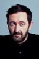

País:Estados Unidos, 103 minutos.
Idiomas:Inglés, Alemán, Italiano, Latín, Español
GénerosTerror, Suspenso
Director/es:Julius Avery
Guionistas:Evan Spiliotopoulos, Michael Petroni
Códec de vídeo:Unknown
Número: 74


Certificación:R
Argumento:
Película sobre Gabriele Amorth, un sacerdote que ejerció como exorcista principal del Vaticano, realizando más de cien mil exorcismos a lo largo de su vida. Amorth escribió dos libros de memorias donde detalló sus experiencias luchando contra Satanás.
Reparto 

Medio: Archivo de video,
Localización: D:\Multimedia\Películas\El exorcista del Papa (2023)\El exorcista del Papa (2023).mkv
Prestado: No
Rel. aspecto: Unknown